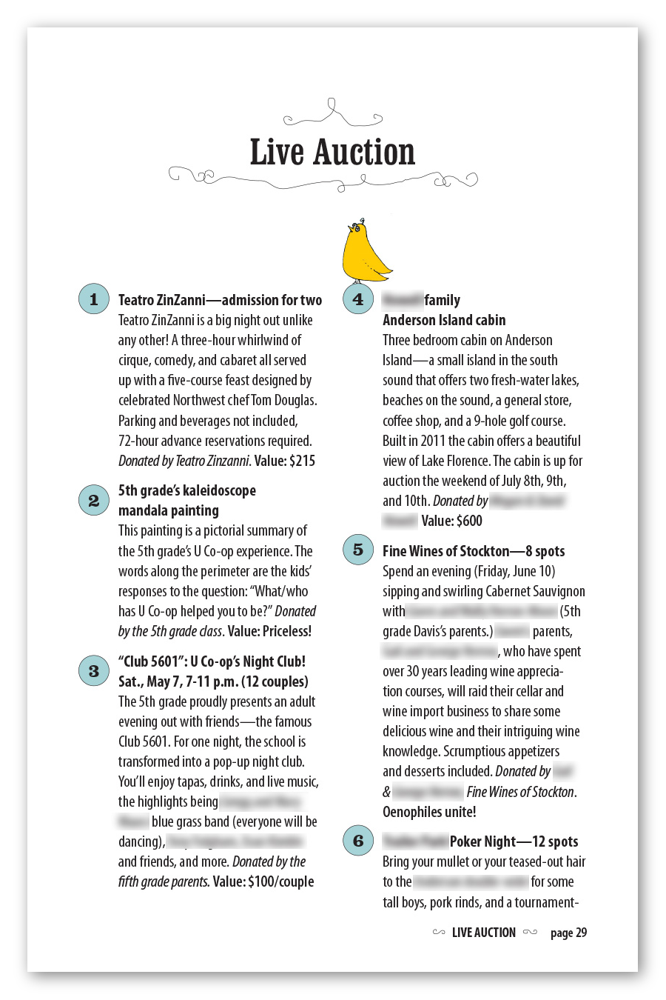
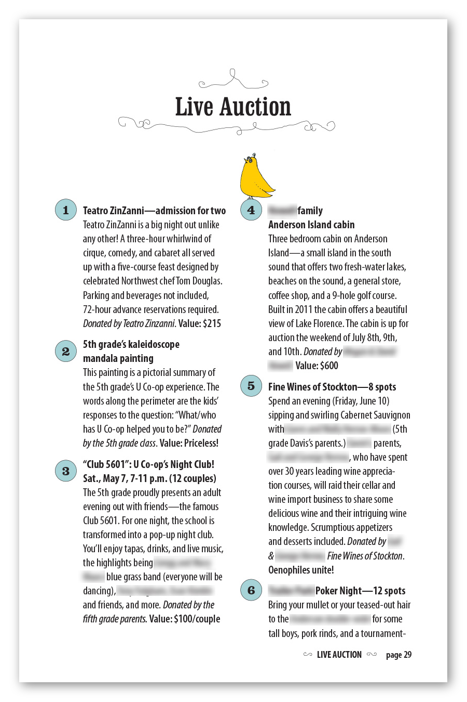
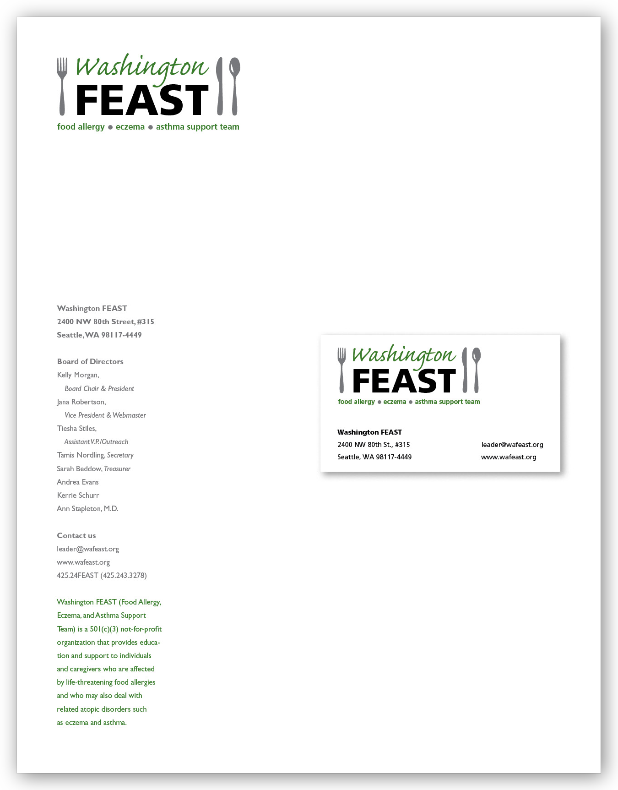

Database publishing
Database publishing for print design involves taking data from a database and getting it a page-layout application in a way that automates or semi-automates the formatting. It’s a critical process for data-intensive works like directories and some catalogs.
I have produced around a dozen catalogs and directions using such methods. Below are samples from one 40-page auction catalog for University Cooperative School. I designed the layout, cueing off the front-page illustration, which was a collaboration between painter Jenny Beedon Snow and illustrator Ed Fotheringham.

 

newsletters
I have written, edited, or produced more newsletters than I wish to count. Here are some samples from the design/production category.
University Cooperative School. For several years I designed, laid out, and copyedited a newsletter for an elementary school that my kids attended. It was a labor of love for a warm, fun-loving, creative, and very close-knit community that I still adore. Below are sample pages from several issues—mostly feature articles. The pages are in JPEG format here so that I could blur faces and names of community members, which the school requested.


Parent Trust for Washington Children. This wonderful advocacy organization asked me to design a template that in-house staff could use to lay out their newsletter for donors, staff, and other constituents. The pages below show the actual template (placeholder copy, lifted from one of their past issues, has been blurred). I did not design the company logo shown on the first and last pages, and the organization has since changed it.


David Rush (Seattle real-estate broker). This was a simple, Swiss-grid design to be printed in single color (full color was still very expensive then) on a single sheet of tabloid (11" x 17") paper, folded in half, stickered shut, and distributed via the USPS with an actual postage stamp!

The new newsletters. The page-based newsletter (printed or PDF) is, of course, giving way to other information-distribution methods including e-mail (e.g., tools like MailChimp), social media, and blogs. I’m experienced with all of those tools—I‘ve been an e-mail administrator (cPanel/GNU Mailman/MailChimp, managing 40+ lists), am adept at the major social-media platforms (I administer several Facebook groups/pages), and have my own very non-business-y, occasional blog called The Procrastination Research Institute.
miscellaneous print design
Graphic ID. While serving on the board of Washington FEAST (Food allergy, Eczema, and Asthma Support Team), a 501(c)(3) that provided education and support for those managing life-threatening food allergies, I worked with other board members to redesign the logo and identity basics. Our intent was to create a friendly, practical logo that would suggest healthy, enjoyable eating (not privation), avoid images of allergens, and be culturally inclusive. Pictured here are the letterhead and sample business card.
School brochure. Brochure for University Cooperative School. Children’s faces have been blurred for privacy reasons.